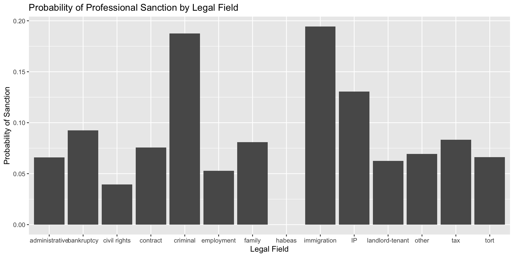
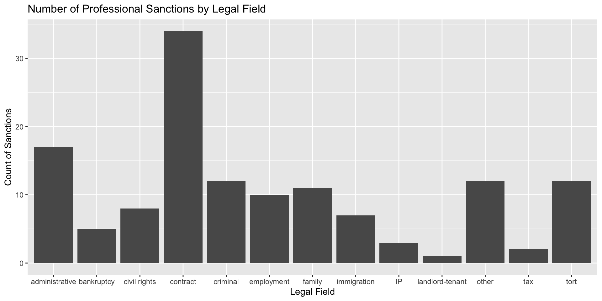
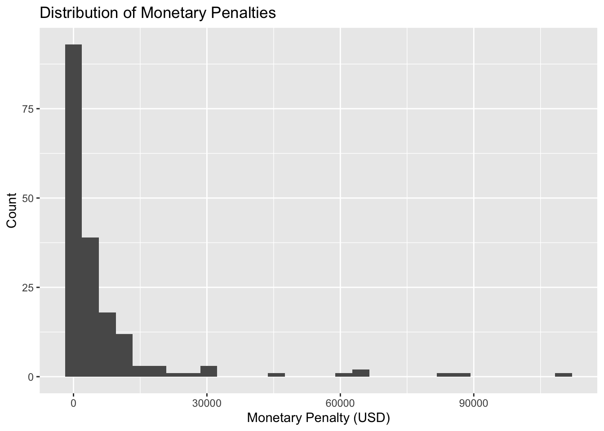
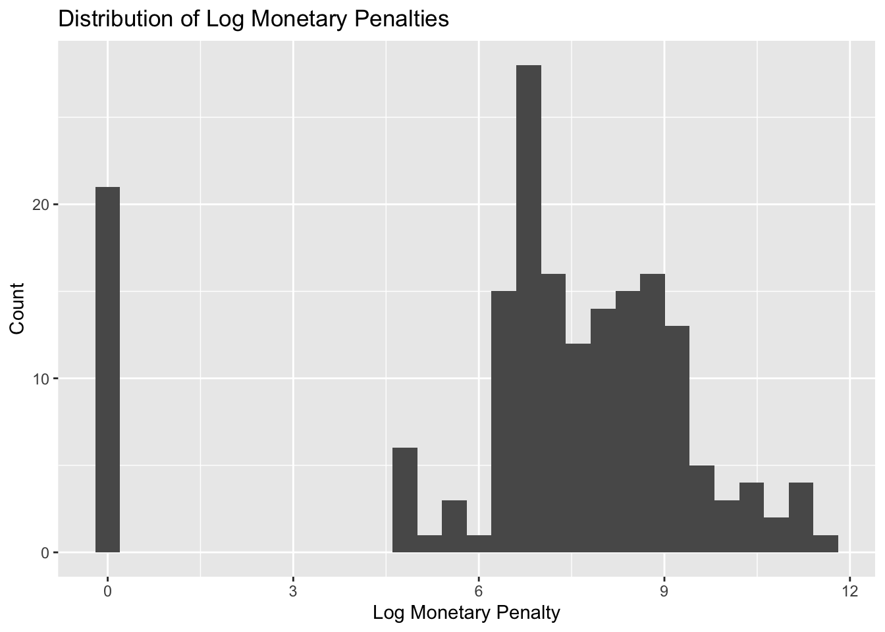

# with package installed
library(tidyverse)
library(lubridate)
raw_data <- read_csv("hallucination_cases.csv")
# names(raw_data)Ai Hallucination Legal Analysis
Author: Joy Zhang
Research Question
As AI tools become more common in legal work, AI-generated errors may lead to severe consequences. In this research, we are investigating: How do the consequences of documented AI hallucination cases differ across legal fields, and how to predict how severe the consequence is.
I examine this question in two ways. First, I compare the probability of professional sanctions across legal fields to see if there’s a field that AI performance is particularly better or worse. Second, among cases with monetary penalties reported in USD, I use a regression model to study which case characteristics are associated with larger penalties.
Data loading
Data Wrangling
The original dataset contains several variables stored as text. For better analysis, I create binary, categorical, and numerical variables for the analysis.
data <- raw_data |>
transmute(
# sanction, alleged, vendor_disputed, change the char to binary set
sanction = ifelse(`Professional Sanction` == "Yes", 1, 0),
alleged = ifelse(Alleged == "Yes", 1, 0),
vendor_disputed = ifelse(`Vendor Disputed` == "Yes", 1, 0),
# For data tool analysis, whether the tool is determined or not
ai_tool_clean = tolower(`AI Tool`),
identified_ai = ifelse(
ai_tool_clean == "implied" |
ai_tool_clean == "unidentified" |
is.na(ai_tool_clean),
0,
1
),
# For the categorical dataset
legal_field = factor(`Legal Field Primary`),
states = factor(`State(s)`),
# take year from date
year = year(Date),
# change monetary from text to numerical data with units
monetary_amount = parse_number(`Monetary Penalty`),
# since there exist some monetary amount with no unit, can't compare
currency = ifelse(
str_detect(`Monetary Penalty`, "[A-Za-z]{3}$"),
toupper(str_sub(`Monetary Penalty`, -3, -1)),
NA_character_
)
)1. Sanction Probability by Legal Fields
For each legal field, the sanction probability is
\[P(\text{sanction}=1 \mid \text{legal field}) = \frac{\text{number of sanctioned cases in the field}} {\text{total number of cases in the field}}.\]
sanction_by_field <- data |>
group_by(legal_field) |>
summarise(
total_cases = n(),
sanction_probability = mean(sanction, na.rm = TRUE)
)
sanction_by_field# A tibble: 15 × 3
legal_field total_cases sanction_probability
<fct> <int> <dbl>
1 administrative 258 0.0659
2 bankruptcy 54 0.0926
3 civil rights 203 0.0394
4 contract 450 0.0756
5 criminal 64 0.188
6 employment 189 0.0529
7 family 136 0.0809
8 habeas 10 0
9 immigration 36 0.194
10 IP 23 0.130
11 landlord-tenant 16 0.0625
12 other 173 0.0694
13 tax 24 0.0833
14 tort 181 0.0663
15 <NA> 261 0.111 The variable sanction_probability represents the proportion of sanctions in each legal field.
ggplot(
sanction_by_field |> filter(legal_field != "NA"),
aes(x = legal_field, y = sanction_probability)
) +
geom_col() +
labs(
x = "Legal Field",
y = "Probability of Sanction",
title = "Probability of Professional Sanction by Legal Field"
)
ggplot(
data |> filter(
legal_field != "NA",
sanction == 1
),
aes(x = legal_field)
) +
geom_bar() +
labs(
x = "Legal Field",
y = "Count of Sanctions",
title = "Number of Professional Sanctions by Legal Field"
)
sanction_summary <- data |>
filter(!is.na(legal_field), legal_field != "NA") |>
group_by(legal_field) |>
summarize(
count = n(),
sanction_count = sum(sanction == 1, na.rm = TRUE),
sanction_proportion = mean(sanction == 1, na.rm = TRUE)
) |>
arrange(desc(sanction_proportion))
summary(sanction_summary$sanction_proportion) Min. 1st Qu. Median Mean 3rd Qu. Max.
0.00000 0.06335 0.07246 0.08579 0.09028 0.19444 With visualization for count, proportion, and numerical summary, we could conclude the trend related to legal_field and sanction. The sanction rate varies substantially across legal fields from 0% to 19.4%, with a mean of 8.58% and a median of 7.25%. Immigration (19.4%) and criminal cases (18.8%) have the highest sanction rates. Criminal cases are particularly notable because the high sanction rate is based on a relatively larger sample of 64 cases. In contrast, contract law has the largest number of sanctions, with 34 cases, but its sanction rate is only 7.56%, suggesting that the high count is due to the high frequency for contract legal field cases, instead of AI performance and understanding in this specific field.
Monetary Penalty Prediction
This analysis examines whether the size of a monetary penalty can be predicted using information about the legal field, whether a specific AI tool was identified, and the year of the case.
The monetary penalty variable contains multiple currencies. To make monetary amounts comparable, I only use cases where the currency is explicitly reported as USD. Cases with missing or zero monetary penalties are also removed.
usd_data <- data |>
filter(
currency == "USD",
!is.na(monetary_amount),
monetary_amount > 0,
!is.na(legal_field),
legal_field != "NA",
!is.na(identified_ai),
!is.na(year)
)Distribution of Monetary Penalties
First, I examine the distribution of monetary penalties.
ggplot(
usd_data,
aes(x = monetary_amount)
) +
geom_histogram() +
labs(
x = "Monetary Penalty (USD)",
y = "Count",
title = "Distribution of Monetary Penalties"
)`stat_bin()` using `bins = 30`. Pick better value `binwidth`.
The monetary penalty variable is strongly right-skewed. Most penalties are relatively small, while a small number of cases have extremely large penalties. These extreme observations can have a large influence on a linear regression model.
Therefore, I use the natural log of monetary penalty as the response variable.
usd_data <- usd_data |>
mutate(
log_monetary_amount = log(monetary_amount)
)ggplot(
usd_data,
aes(x = log_monetary_amount)
) +
geom_histogram() +
labs(
x = "Log Monetary Penalty",
y = "Count",
title = "Distribution of Log Monetary Penalties"
)`stat_bin()` using `bins = 30`. Pick better value `binwidth`.
After taking the log, the distribution is less strongly skewed. This makes linear regression more appropriate. So, we decided to have a linear regression on log value of monetary penalty.
Prediction Model
The response variable is
\[Y_i = \log(\text{Monetary Penalty}_i)\]
The predictors are:
legal_field: the legal area associated with the caseidentified_ai: whether a specific AI tool was identifiedyear: the year of the case
The regression model is \[ \log( \text{Penalty}_i) = \beta_0 + \beta_1 \text{IdentifiedAI}_i + \beta_2\text{Year}_i + \beta_3\text{LegalField}_i + \epsilon_i\]
I treat year as a categorical variable.
Training and Test Data
To evaluate prediction performance, the model is fit using 80% of the data, and 20% for testing.
set.seed(123)
train_index <- sample(
1:nrow(usd_data),
size = 0.8 * nrow(usd_data)
)
train <- usd_data[train_index, ]
test <- usd_data[-train_index, ]
monetary_model <- lm(
log_monetary_amount ~ identified_ai + factor(year) + legal_field,
data = train
)
summary(monetary_model)
Call:
lm(formula = log_monetary_amount ~ identified_ai + factor(year) +
legal_field, data = train)
Residuals:
Min 1Q Median 3Q Max
-7.4729 -0.5480 0.4032 1.6649 5.3352
Coefficients:
Estimate Std. Error t value Pr(>|t|)
(Intercept) 8.99491 3.36119 2.676 0.00843 **
identified_ai 0.39608 0.61317 0.646 0.51948
factor(year)2024 -0.45827 4.25841 -0.108 0.91447
factor(year)2025 -1.16414 3.01178 -0.387 0.69975
factor(year)2026 -1.35854 3.04050 -0.447 0.65577
legal_fieldbankruptcy -2.84070 2.20028 -1.291 0.19903
legal_fieldcivil rights -0.17063 1.53997 -0.111 0.91195
legal_fieldcontract -0.87380 1.43858 -0.607 0.54467
legal_fieldcriminal -0.43155 3.24136 -0.133 0.89429
legal_fieldemployment -1.33182 1.59284 -0.836 0.40465
legal_fieldfamily -1.66726 1.54477 -1.079 0.28250
legal_fieldhabeas -0.51756 3.28573 -0.158 0.87509
legal_fieldimmigration -0.06933 1.97745 -0.035 0.97209
legal_fieldIP 0.12806 3.24136 0.040 0.96855
legal_fieldlandlord-tenant -7.83078 3.28573 -2.383 0.01864 *
legal_fieldother -1.62047 1.49421 -1.085 0.28020
legal_fieldtort -0.16349 1.49210 -0.110 0.91292
---
Signif. codes: 0 '***' 0.001 '**' 0.01 '*' 0.05 '.' 0.1 ' ' 1
Residual standard error: 2.94 on 127 degrees of freedom
Multiple R-squared: 0.1009, Adjusted R-squared: -0.01238
F-statistic: 0.8907 on 16 and 127 DF, p-value: 0.5811The results show that monetary penalty does not have a clear relationship with AI identification, year, or legal field. Most of the variables are not statistically significant (with p value significantly higher than 0.1), and the estimates are fairly uncertain. Landlord-tenant is the only legal field with a significant result, but there are likely only a small number of cases in that group.
The model has an R-squared of about 0.10, meaning that it explains only around 10% of the variation in monetary penalties. The adjusted R-squared is slightly negative, which suggests that adding legal field, year, and AI identification does not improve the model comparing to using mean to predict.
Overall, these variables do not seem to be very useful for explaining differences in monetary penalties.
Prediction Performance
Next, I use the fitted model to predict monetary penalties for cases in the test set.
predicted_log_penalty <- predict(
monetary_model,
newdata = test
)I calculate the test mean squared error.
test_mse <- mean(
(test$log_monetary_amount - predicted_log_penalty)^2
)
test_mse[1] 7.79571sqrt(test_mse)[1] 2.79208With the test set mean squared error equals to 7.79571 and SMSE equals to 2.79. This is a fairly large prediction error, suggesting that the model does not predict monetary penalties very accurately.
Conclusion
Overall, the data shows that the fine of AI-related legal errors differ across cases. Immigration and criminal cases have the highest observed professional sanction rates. In contrast, monetary penalties are much harder to predict. Legal field, year, and whether the AI tool was identified explain only a small amount of the penalty size. These results suggest that legal field may be useful for understanding whether should we be more cautious in some field while using AI, but it’s hard to predict the actual consequences.
Limitation
This analysis has several limitations. The dataset only includes documented cases, some legal fields have small sample sizes, and the monetary penalty analysis only uses USD cases. The regression also uses only a small number of predictors, so other important factors may be missing.